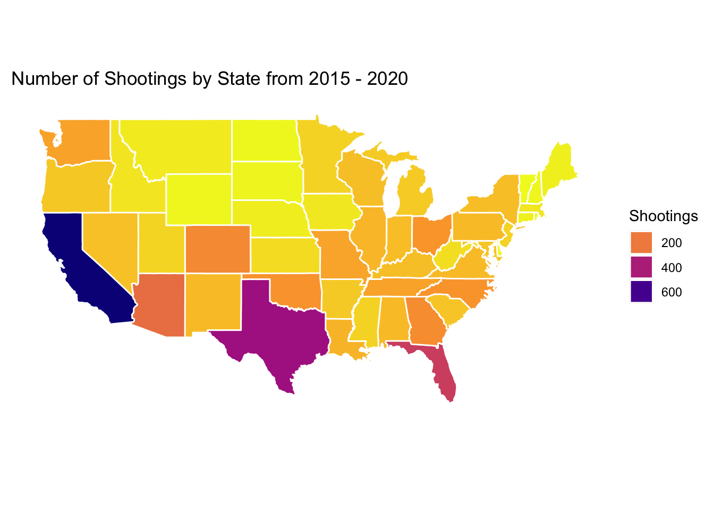

# load libraries
library(tidyverse)
library(sf)
library(dplyr)
library(spData)
library(ggplot2)
library(maps)
library(usdata)
library(mapproj)
library(ggplot2)
# read in and organize data
shootings <- read.csv("shootings.csv", header=TRUE)
shootings$num_shootings <- 1:length(nrow(shootings))
shootings_state <- shootings %>%
group_by(state) %>%
summarise(num_shootings = sum(num_shootings))
shootings_state$state <- abbr2state(shootings_state$state)
shootings_state <- shootings_state[order(shootings_state$state),]
# merge data onto the spatial data.frame
us_shootings <- map_data("state") %>%
mutate(region = str_to_title(region),
subregion = str_to_title(subregion)) %>%
left_join(shootings_state, by = c("region" = "state"))
# create map
p_shootings_state <- ggplot(data = us_shootings,
mapping = aes(x = long, y = lat,
group = group,
fill = num_shootings))
p_shootings_state <- p_shootings_state +
geom_polygon(color="white") +
ggdendro::theme_dendro() +
scale_fill_viridis_c(option="plasma", direction=-1) +
guides(fill=guide_legend(title="Shootings")) +
coord_map() +
ggtitle("Number of Shootings by State from 2015 - 2020")STAA 566 Maps
US Police Shootings 2015-2020
Information:
Data Source: “shootings.csv” from https://www.kaggle.com/datasets/ahsen1330/us-police-shootings?resource=download.
Spatial Units Being Displayed: US states
What I want to communicate: I want to communicate shooting trends in the US over the past years. I want the user to be able to see where in the US by state there have been the most amounts of shooting and where there have been the least. This can allow the user to better understand where in the US shootings are the worst.
What decisions I made and why I made those to best communicate the data: I decided to group the data by state and count the number of shootings that occurred in that state. This allows the data to be communicated to the user at a state-level and makes the map easy to read an interpret. The data file that I got included data from 2015-202 so that’s why I decided to use those dates. The colors that I included make it obvious to the user which states have had a lot of shootings and which have had a lower amount, especially with the sharp contrast in colors with Texas and California for examaple. This helps to clearly communicate the data to the user with ease.
R Code:
Save Figure as PDF:
pdf("US_Shootings.pdf", heigh=6, width=8)
print(p_shootings_state)
dev.off()quartz_off_screen
2 Display Map in HTML:
p_shootings_state